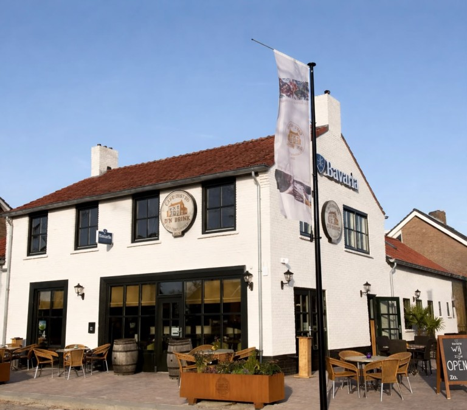
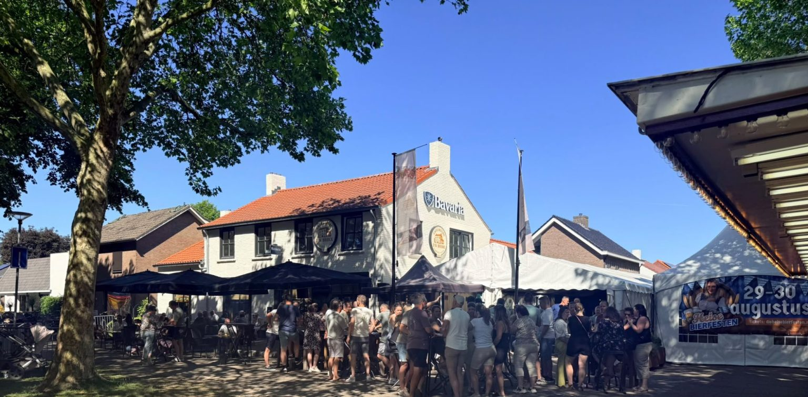
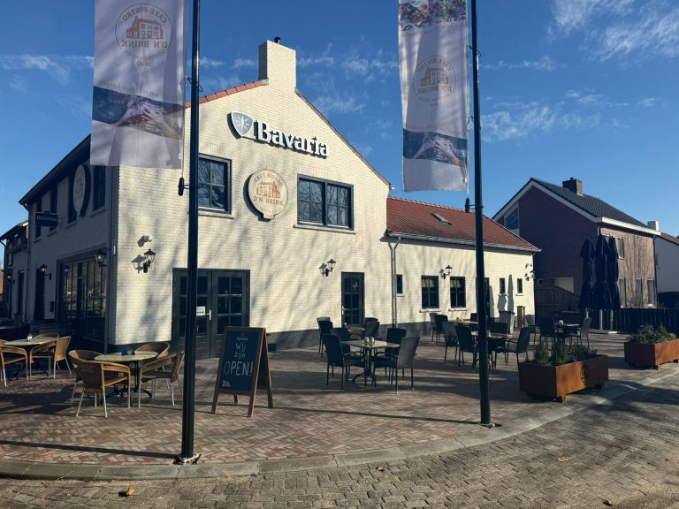
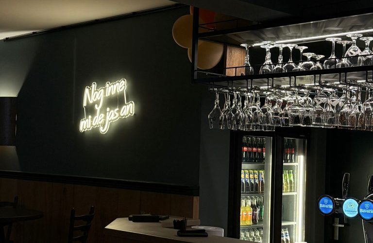
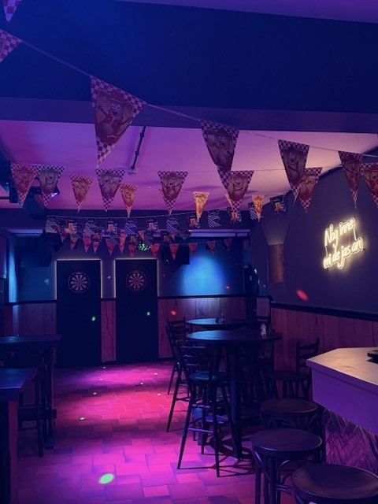
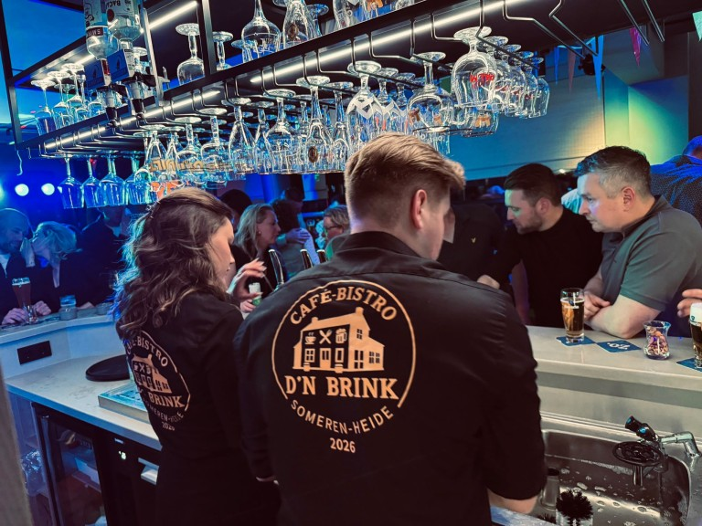

Café medewerker
Als enthousiaste café medewerker organiseer je activiteiten zoals muziekbingo, quiz en proeverijtjes, en programma's voor Kermis, Carnaval, de Kennedymars en meer. Je stuurt het avondteam aan.
Midden in Someren-Heide, aan de Brink. Kom voor een drankje, een hapje of gewoon een gezellig praatje.

Zoals velen van jullie vast al hebben gezien, heeft het voormalige pand van 't Heis Huukske een enorme metamorfose ondergaan.
Wij zijn de familie Martens, bekend van Zorgboerderij Wouterbergen, en voelen ons al jarenlang sterk verbonden met Someren-Heide. Dit dorp betekent veel voor ons. Juist daarom vinden we het jammer wanneer stukje bij beetje dorpshistorie verdwijnt.
Het pand aan de Brink is daar een goed voorbeeld van. Jarenlang was dit een plek waar mensen elkaar ontmoetten, waar werd gelachen, gepraat en samen herinneringen werden gemaakt. De laatste tijd stond het pand leeg en raakte het steeds verder in verval. Er was zelfs een reële kans dat het plaats zou moeten maken voor iets nieuws, en daarmee zou opnieuw een vertrouwde ontmoetingsplek uit ons dorp verdwijnen.
Bij ons thuis werd hier vaak over gesproken. Hoe mooi zou het zijn als deze plek behouden kon blijven voor het dorp? Die gedachte liet ons niet meer los. We hebben daarom de stap gezet om het pand over te nemen. Iets waar we trots op zijn.
Wat begon met het idee om het pand op te knappen, is uitgegroeid tot een volledige verbouwing. Het is een heel ander pand geworden, maar wél met hetzelfde doel: een plek waar iedereen zich welkom voelt.
Onze wens is om D'n Brink weer een echte dorpsplek te laten zijn. In het weekend openen we het café, als ontmoetingsplek voor jong en oud en voor alle verenigingen. Daarnaast openen we een bistro, waar je terechtkunt om gezellig te eten en drinken, maar ook om iets af te halen. De bistro is geopend van dinsdag tot en met zondag.
Tot snel bij Café / Bistro D'n Brink
Familie Martens




In het weekend is het café open, als ontmoetingsplek voor jong en oud en voor alle verenigingen. We willen D'n Brink ook graag samen met jullie laten leven. Denk aan avonden die door inwoners zelf worden georganiseerd:
Alles laagdrempelig en voor iedereen toegankelijk. Heb je zelf een leuk idee, of lijkt het je leuk om eens een avond mee te draaien? Neem dan gerust contact met ons op.
Deel je ideeOns café is dé plek voor feesten en partijen. Of het nu gaat om een verjaardag, jubileum, bedrijfsfeest of een andere gelegenheid: we verzorgen besloten feesten en bijeenkomsten op maat. Van verjaardagen tot borrels, wij maken er altijd iets speciaals van.
Informeer vrijblijvend naar de mogelijkheden.
Bel 0493 72 41 99
Ons café is zaterdagavond besloten vanwege een feest. De bistro is overdag gewoon open tot 19.00 uur, dus kom gezellig langs voor een lekkere lunch of een goed diner.
We mochten PeelKijk ontvangen in onze bistro met café. Bekijk de reportage die zij maakten, en kom ook snel een kijkje nemen.
Bekijk de video op FacebookZodra de zon schijnt, staat het terras aan de Brink voor je klaar.
Kom jij gezellig bij ons carnaval vieren? Bekijk ons programma.
Bekijk het carnavalsprogrammaEen dorpsquiz, muziekbingo of speciaalbierproeverij, georganiseerd door inwoners zelf. Heb je een idee? Bel 0493 72 41 99.
Nog op zoek naar een te gek cadeau? Geef een cadeaubon van Café & Bistro D'n Brink.
Af te halen tijdens openingstijden, dinsdag t/m zondag van 10.00 tot 19.00 uur.
We zoeken collega's voor het café en de bistro. Reageren kan via info@cafebistrodenbrink.nl.
Als enthousiaste café medewerker organiseer je activiteiten zoals muziekbingo, quiz en proeverijtjes, en programma's voor Kermis, Carnaval, de Kennedymars en meer. Je stuurt het avondteam aan.
Je werkt in de bediening, achter de bar en in de keuken of frituur. Uren in overleg.
| Maandag | Gesloten |
|---|---|
| Dinsdag en woensdag | 11.00 – 20.00 uur |
| Donderdag t/m zondag | vanaf 10.00 uur |
| Keuken | di t/m zo 11.30 – 19.30 uur |
| Frituur | di t/m zo 11.00 – 19.45 uur |
Het café is in het weekend ook 's avonds open.
Brink 10, 5712 GA Someren-HeideReserveren of iets afhalen? Bel of mail ons.